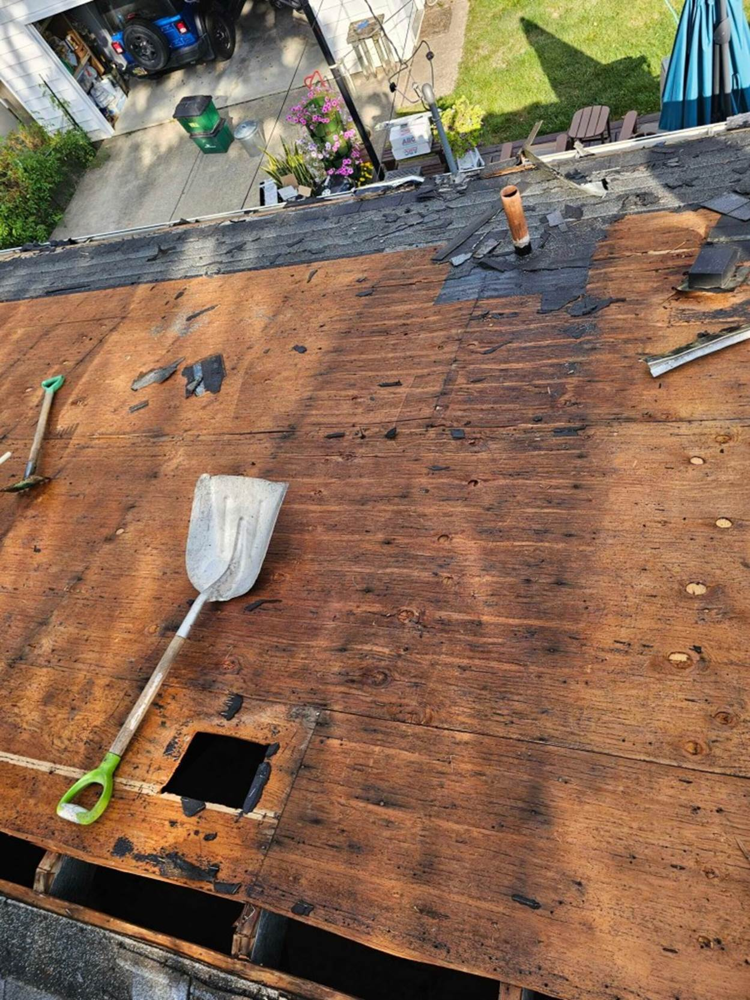
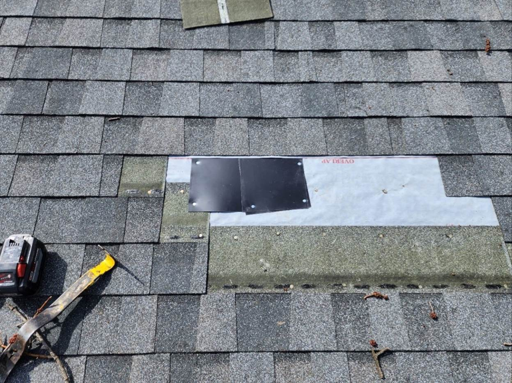
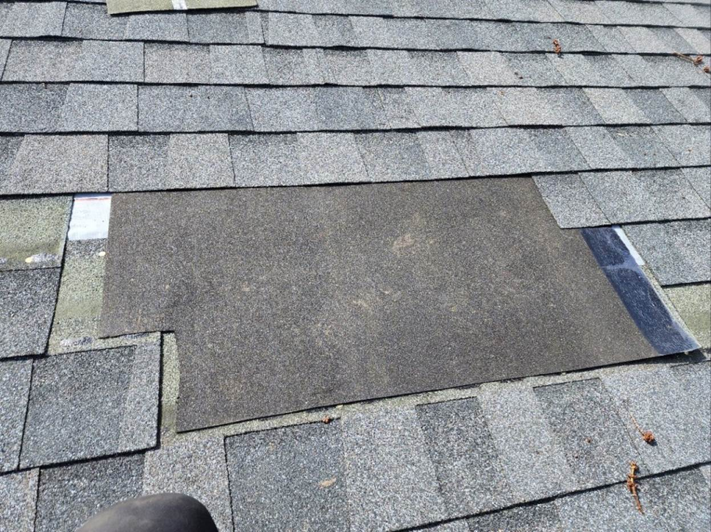
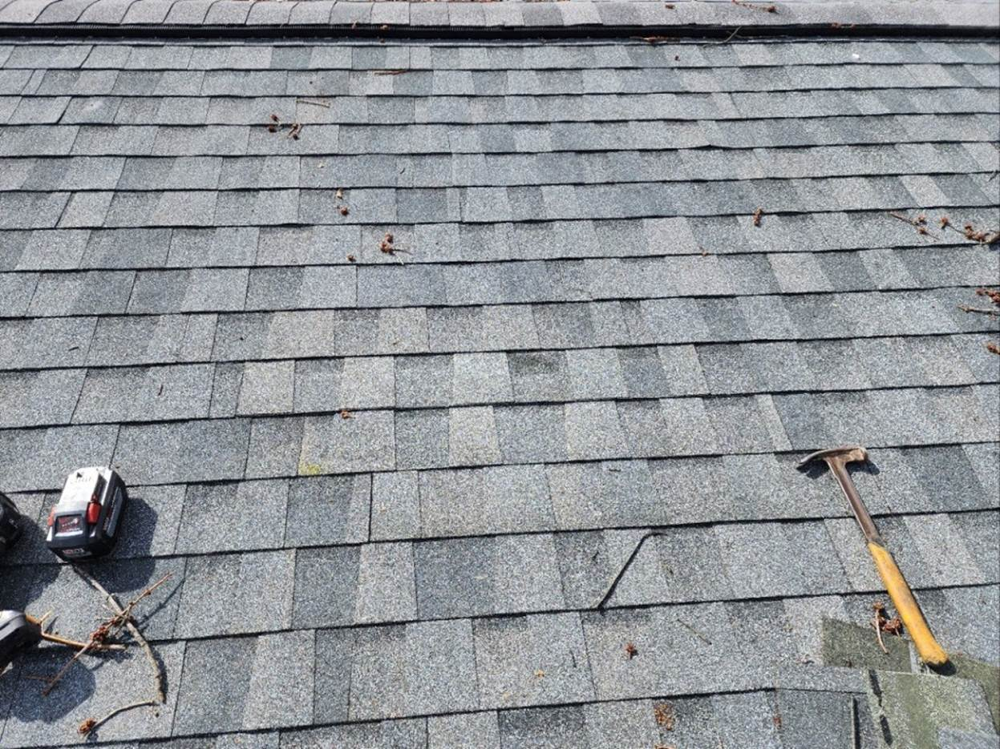

Roofing
This guide covers the most common residential roofing systems: architectural asphalt shingles, standing-seam metal, and EPDM for low slopes. It focuses on best practices and code compliance for professional remodelers.
Quick Reference
- Confirm shingle and trim colors before ordering
- Move client cars and valuables out of work zone
- Replace rotted sheathing and fascia during tear-off
- Install plywood clips on 24" OC framing
- Ice and water shield must extend 24" inside the warm wall (R905.1.2)
- Full-field synthetic underlayment required
- Take inspection photos: open roof, underlayment, details
- Final magnet sweep and cleanup to remove all debris and fasteners
Materials and Tools
- Ice and water membrane (ASTM D1970)
- Synthetic underlayment (ASTM D6757) or 15 lb felt (ASTM D226 Type I)
- Drip edge (eave and rake)
- Fascia boards for replacement
- 1/2" OSB for repairs with plywood clips
- Roofing material:
- Asphalt: shingles, starter, cap
- Metal: panels, clips/cleats, butyl tape
- EPDM: 60 mil sheet, bonding adhesive, 5" seam tape
- Nailer, stapler, hand seamer, metal snips, roller, shears, knives, pop riveter
- Roof jacks and 2x6
Process
- Preparation
- Inspect deck and fascia, stage repair materials ahead of tear-off
- Order roofing material for rooftop delivery or ground drop
- Coordinate: all other trades off site for roofing day
- Notify client: noisy days, move cars, protect landscaping and valuables
- On new builds, fascia must be in place before installing the roof
- Clear the area and place tarps for protection
- Tear-Off and Deck Repairs
- Strip roof to sheathing
- Replace rotted or damaged areas
- Install plywood clips where needed
- Decking requirements:
- Minimum 3/8" plywood or OSB (APA), or 1x6 with 1/8" max gap
- 8d common nails (0.131", 2.5") at 6" OC edges, 12" OC field (IRC Table R602.3(1))
- 16 gauge 1.5" 7/16 crown staple allowed in some jurisdictions, 6" OC
- High wind/coastal zones: 4-6" OC with ring shank nails
- Take open roof inspection photos of exposed sheathing after repairs
- Underlayment and Drip Edge
- Install drip edge on eaves first:
- Roofing nails: 12" OC max (16" max per R905.2.8.5), nail high for coverage
- Laps: 1" straight, 2" at direction changes
- Install ice and water shield:
- At eaves: minimum 24" inside warm wall (R905.1.2)
- Along valleys: 18" on each side of centerline
- Use high temperature non-granulated under metal roofing
- Follow manufacturer instructions for drip edge sequence
- Install synthetic underlayment:
- Fasten with cap nails 6" OC edges, 12" OC grid in field, 12-gauge min, 3/4" penetration, 1" cap
- Staples or roofing nails OK if covered same day
- Horizontal laps: 3" (4:12 pitch); code minimum 2"
- Vertical laps: 6" (2024 IRC R905.1.1)
- Extend 3-4" up sidewalls
- Double underlayment for 2-4 pitch (each course overlaps 50%+ of course below)
- Use self-adhered high temperature underlayment under metal roofing
- Install drip edge on rakes
- Install drip edge on eaves first:
- Flashing and Penetrations
- Flash all valleys and deck transitions per plan
- Flash deck and wall transitions before roof install for waterproofing
- Roofing System Installation
- Architectural Asphalt (slope 2:12+):
- Starter: install at eaves, trim 6" off first course, overhang eaves/rakes 1/4"-3/4"
- 4 fasteners min per starter, 1.5"-3" above eave, 1"-2" from ends, others 10"-12" OC
- Shingles: 4-nail standard, 6-nail high-wind (R905.2)
- Nail 1" from ends, 2 more evenly spaced above cutouts, below sealant
- Roofing nails: 1.25-1.75" corrosion-resistant, 3/8" head, must penetrate sheathing
- Stainless nails required within 3,000 ft of saltwater
- String line every 6 courses; stagger joints
- Install flashing/boots in sequence as you reach penetrations
- Standing-Seam Metal:
- Confirm locking strip is installed at eaves
- Install panels with #10x1" pancake head screws into hidden panel edges or clips
- Clean metal shavings off panels
- Butyl or tube sealant at sidelaps (R905.10)
- Integrate all flashing for penetrations with each panel course
- EPDM (slope 2:12 or less):
- Do not install underlayment
- Mechanically fasten foam underlayment
- Clean deck and install edges (coping)
- Unroll EPDM membrane and allow to relax for 30 minutes
- Apply adhesive to deck and membrane underside (keep off lap joints and edges)
- Seal seams and edges with primer and tape, rolling as instructed (R905.13)
- Architectural Asphalt (slope 2:12+):
- Ridge and Hip Caps
- Install appropriate ridge vent/cap per system
- Ventilation ratio: 1 sq ft net free vent area per 150 sq ft attic, OR 1:300 with vapor barrier and balanced airflow (R806.2)
- Cleanup and Documentation
- Full magnet sweep to collect nails, screws, rivets, cuttings
- Manually inspect for debris
- Document installation with photos for warranty and inspector
Best Practices
- Never dispose of shingles, masonry, or dirt in regular dumpsters; use roofing contractor's haul-away service
- Place skid plates under bins to protect driveways from scratching and settling
- Always confirm you received all material before starting; don't rely on yard delivery confirmations
- Leave some leftover shingles for future repairs
Inspections
Permits are required for most reroofs. Flat and EPDM systems nearly always trigger inspection. Many jurisdictions allow photos in place of on-site inspections.
- Open roof inspection: sound deck after repairs, nail schedule, plywood clips
- Underlayment inspection: correct fasteners and overlaps
- Final inspection: extension past roof edge, cap/ridge in place
Client Communication
- Confirm color and profile samples with client before ordering (roof, drip, coping, cap, wall flashing)
- Explain that shingle systems need adequate slope; EPDM is for flat/low-slope only
- Advise on warranty registration and maintenance: gutters, spring inspections of flashings, debris removal
- Typical service life: Asphalt 20-30 years, Standing-Seam Metal 40-60 years, EPDM 25-35 years (verify current manufacturer warranty)
- Advise the client to notify their homeowner's insurance company about the new roof, as it may lower their rates; provide a paid-in-full invoice or receipt as proof for the insurer
Photo Examples




Resources
- Roofing Order Sheet
- 2015 Michigan Residential Code and 2021 IRC: R905.1.2, R905.2, R905.10, R905.13
- Metal Roofing Installation Guide
- EPDM Roofing Installation Guide
Last revised: 01/30/2026